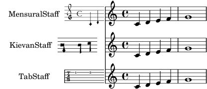
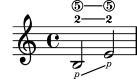
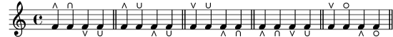
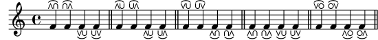

| [ << New for musical notation ] | [Top][Contents] | [ New for specialist notation >> ] |
| [ < Repeat improvements ] | [ Up: New for musical notation ] | [ Text and font improvements > ] |
Editorial annotation improvements
- Incipits may now be printed with various context types. It also
got an optional argument to shift the incipit to the left.
\score { << \new Staff \with { instrumentName = "MensuralStaff" } { \incipit { c'4 d' } c'4 d' e' f' g'1 } \new Staff \with { instrumentName = "KievanStaff" } { \incipit #2 \new KievanStaff { c'4 d' } c'4 d' e' f' g'1 } \new Staff \with { instrumentName = "TabStaff" } { \incipit \new TabStaff \with { \magnifyStaff 0.5 \override InstrumentName.font-size = 6 } { c'4 d' } c'4 d' e' f' g'1 } >> \layout { indent = 5\cm incipit-width = 2\cm } }

- Optional additional material can be enclosed in brackets that pass
through the staff with
\startOptionalMaterialand\stopOptionalMaterial.![[image of music]](../5a/lily-66b7aaab.png)
- The
FingerGlideSpannermay now connectStringNumberandStrokeFingergrobs.{ \set strokeFingerOrientations = #'(down) b2 \glide -\rightHandFinger #1 \glide -2 \glide \5 e'-\rightHandFinger #1 -2 \5 }

- A new engraver,
Toe_heel_engraver(enabled by default) listens to the context variabletoeHeelStyleto provide styling options for the commands\rtoe,\ltoe,\rheel, and\lheel.music = { f'4\rtoe f'4\rheel f'4\ltoe f'4\lheel \bar "||" } { \music % #'default \set toeHeelStyle = #'standard \music \set toeHeelStyle = #'reversed \music \set toeHeelStyle = #'below \music \set toeHeelStyle = #'circleheels \music }

If the engraver is enabled, these commands no longer behave like normal
Scriptgrobs since they ignore direction changes (i.e., ‘^’, ‘_’, and\tweak directionare ignored). If the need arises to position pedal marks individually, the new, standard articulation commands\toe,\vartoe,\heel,\varheel, and\heelcircle(accessing the new glyphscripts.pedalheelcircle) should be used instead.{ f'2\toe f'2\vartoe | f'2\heel f'2\varheel | f'1\heelcircle }
![[image of music]](../5a/lily-6e3ff290.png)
Removing the engraver makes
\rtoeand siblings behave as in previous LilyPond versions. - Directly related to the previous item are four new,
articulation-like commands to indicate toe-heel and heel-toe
substitutions,
\ltoeheel,\rtoeheel,\lheeltoe, and\rheeltoe. They are influenced by theToe_heel_engraverin the same way as\rtoeand siblings. Toe and heel glyphs have been harmonized in size to make these substitution marks look good.music = { f'4\rtoeheel f'4\rheeltoe f'4\ltoeheel f'4\lheeltoe \bar "||" } { \music % #'default \set toeHeelStyle = #'standard \music \set toeHeelStyle = #'reversed \music \set toeHeelStyle = #'below \music \set toeHeelStyle = #'circleheels \music }

-
NoteNamegrobs are now horizontally centered by default.
| [ << New for musical notation ] | [Top][Contents] | [ New for specialist notation >> ] |
| [ < Repeat improvements ] | [ Up: New for musical notation ] | [ Text and font improvements > ] |